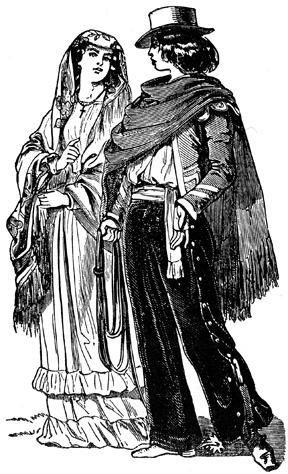
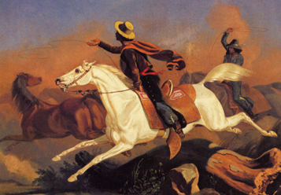
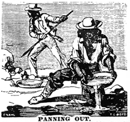
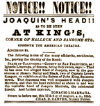
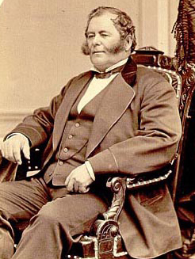

THE MEXICANS.
in the area of Columbia, California
1850-1900

Early drawing of Mexicans - Charles Nahl.

The Californians (Mexican citizens) are an idle, thriftless people, and can make nothing for themselves. - Two Years before the Mast by Richard Henry Dana, Jr. - 1840
NOTE on this Page:
A great read is the letters of Frances Calderon de la Barca in her book, Life in Mexico, written from late 1839 to early 1842. She discribes the attitude of the well to do and of the poor's choice to begging over working and she details life, customs and clothing, and much much more. (a fun and detailed look at the people who made up early Mexico after the Spanish left, which I highly recommend to any serious researcher on Mexico.)
Accounts of the Argonauts who ventured into California during the gold rush reveal a variety of attitudes and opinions regarding the Mexicans (Spanish/Indian mix). Many expressed contempt for the Mexicans' mode of living and apparent lack of motivation. Others were fascinated by their colorful and unique costumes. The following quotes are from primary sources, some of which are out-of-print, and are offered for your reading pleasure to provide a wide base of reliable information on the topic of Mexicans in the California gold rush. As always, I hope you follow-up this information with your own research and investigations while I also admonish you to demand documentation and validity of all sources. (example of exaggerated "publications" is this 1836 Texas Forever poster) - Floyd D. P. Øydegaard
The early officers (Mexicans) were dressed in the costume which we found prevailed through the country. A broad-brimmed hat, usually of a black or dark-brown color, with a gilt or figured band round the crown, and lined inside with silk; a short jacket of silk or figured calico, (the European skirted body-coat is never worn) the shirt open in the neck; rich waistcoat, if any; pantaloons wide, straight, and long, usually of velvet, velveteen, or broadcloth; or else short breeches and white stockings.
They wear the deer-skin shoe, which is of a dark-brown color, and, (being made by Indians,) usually a good deal ornamented. They have no suspenders, but always wear a sash round the waist, which is generally red, and varying in quality with the means of the wearer. Add to this the never-failing cloak, and you have the dress of the Californian. This last garment, the cloak, is always a mark of the rank and wealth of the owner. The "gente de razon," or aristocracy, wear cloaks of black or dark blue broadcloth, with as much velvet and trimmings as may be; and from this they go down to the blanket of the Indian; the middle classes wearing something like a large table-cloth, with a hole in the middle for the head to go through. This is often as coarse as a blanket, but being beautifully woven with various colors, is quite showy at a distance. Among the Mexicans there is no working class; (the Indians being slaves and doing all the hard work;) and every rich man looks like a grandee, and every poor scamp like a broken-down gentleman. I have often seen a man with a fine figure, and courteous manners, dressed in broadcloth and velvet, with a noble horse completely covered with trappings; without a real (Spanish coin) in his pocket, and absolutely suffering for something to eat. - Two Years before the Mast by Richard Henry Dana, Jr. - 1840
Early Mexican clothing - David Rickman.
The fondness for dress among the women is excessive, and is often the ruin of many of them. A present of a fine mantle, or of a necklace or pair of ear-rings, gains the favor of the greater part of them. Nothing is more common than to see a woman living in a house of only two rooms, and the ground for a floor, dressed in spangled satin shoes, silk gown, high comb, and gilt, if not gold, ear-rings and necklace. If their husbands do not dress them well enough, they will soon receive presents from others. They used to spend whole days on board our vessels, examining the fine clothes and ornaments, and frequently made purchases at a rate which would have made a seamstress or waiting-maid in Boston open her eyes. Next to the love of dress, I was most struck with the fineness of the voices and beauty of the intonations of both sexes. Every common ruffian-looking fellow, with a slouched hat, blanket cloak, dirty under-dress, and soiled leather leggins, appeared to me to be speaking elegant Spanish. It was a pleasure, simply to listen to the sound of the language, before I could attach any meaning to it. They have a good deal of the Creole drawl, but it is varied with an occasional extreme rapidity of utterance, in which they seem to skip from consonant to consonant, until, lighting upon a broad, open vowel, they rest upon that to restore the balance of sound. The women carry this peculiarity of speaking to a much greater extreme than the men, who have more evenness and stateliness of utterance. A common bullock-driver, on horseback, delivering a message, seemed to speak like an ambassador at an audience. In fact, they sometimes appeared to me to be a people on whom a curse had fallen, and stripped them of everything but their pride, their manners, and their voices. Another thing that surprised me was the quantity of silver that was in circulation. I certainly never saw so much silver at one time in my life, as during the week that we were at Monterey. The truth is, they have no credit system, no banks, and no way of investing way of investing money but in cattle. They have no circulating medium but silver and hides, which the sailors call "California bank notes." Everything that they buy they must pay for in one or the other of these things. The hides they bring down dried and doubled, in clumsy ox-carts, or upon mules' backs, and the money they carry tied up in a handkerchief; fifty, eighty, or an hundred dollars and half dollars. - Two Years before the Mast by Richard Henry Dana, Jr. - 1840
Vaquero - Charles Nahl.

The men in Monterey appeared to me to be always on horseback. Horses are as abundant here as dogs and chickens were in Juan Fernandez. There are no stables to keep them in, but they are allowed to run wild and graze wherever they please, being branded, and having long leather ropes, called "lassos," attached to their necks and dragging along behind them, by which they can be easily taken. The men usually catch one in the morning, throw a saddle and bridle upon him, and use him for the day, and let him go at night, catching another the next day. When they go on long journeys, they ride one horse down, and catch another, throw the saddle and bridle upon him, and after riding him down, take a third, and so on to the end of the journey. There are probably no better riders in the world. They get upon a horse when only four or five years old, their little legs not long enough to come half way over his sides; and may almost be said to keep on him until they have grown to him. The stirrups are covered or boxed up in front, to prevent their catching when riding through the woods; and the saddles are large and heavy, strapped very tight upon the horse, and have large pommels, or loggerheads, in front, round which the "lasso" is coiled when not in use. They can hardly go from one house to another without getting on a horse, there being generally several standing tied to the door-posts of the little cottages. When they wish to show their activity, they make no use of their stirrups in mounting, but striking the horse, spring into the saddle as he starts, and sticking their long spurs into him, go off on the full run. Two Years before the Mast by Richard Henry Dana, Jr. - 1840
Their spurs are cruel things, having four or five rowels, each an inch in length, dull and rusty. The flanks of the horses are often sore from them, and I have seen men come in from chasing bullocks with their horses' hind legs and quarters covered with blood. They frequently give exhibitions of their horsemanship, in races, bull-baitings, etc.; but as we were not ashore during any holyday, we saw nothing of it. Monterey is also a great place for cock-fighting, gambling of all sorts, fandangos, and every kind of amusement and knavery. Trappers and hunters, who occasionally arrive here from over the Rocky mountains, with their valuable skins and furs, are often entertained with every sort of amusement and dissipation, until they have wasted their time and their money, and go back, stripped of everything. - Two Years before the Mast by Richard Henry Dana, Jr. - 1840
Nothing but the character of the people prevents Monterey from becoming a great town. - Two Years before the Mast by Richard Henry Dana, Jr. - 1840
Intemperance...is a common vice among the indians. The Mexicans, on the contrary, are abstemious, and I do not remember ever having seen a Mexican intoxicated. - Two Years before the Mast by Richard Henry Dana, Jr. - 1840
.....The miners chose to prohibit peonage: the use of gangs of Indians (as had been common in 1848) or Negro slaves. More difficult to control was the patron system, whereby a wealthy Mexican would send a group of peons under supervision of a majordomo to work their claims but pay back half or more of their earnings. Normal enough in Mexico, this system was resented by American miners, who in 1850 would resort to aggressive methods to drive out all such foreigners. - Rush For Riches by J.S. Holliday - 1999
There was a dealer who caught my eye more than the others. He was a Chilean with a straw hat pulled down over his eyebrows and who handled the cards with amazing dexterity...I came up to the table almost at the same time as a Mexican with a poncho down practically to his heels, a sombrero so large that the brims went out past his shoulders, with hair down to his waist, and a beard to his chest. - The Diary of Ramon Gil Navarro - 1849

"The above represents the primitive method of mining...the Chilian(sic) or Mexican uses the pan or bowl(wooden batea) exclusively." - James M. Hutchings 1855.
1848 Some Mexicans from Sonora Mexico wandered up as far as Woods' Crossing, late Autumn. - Bancroft
1848 Owing to the want of fresh vegetables, multitudes of the miners were attacked with scurvy as soon as the rainy season commenced. This was especially true of the Mexicans, who died by hundreds.- Miners & Business Men's Directory - 1856
1849 By the summer at least six thousand Sonorans had crowded into the southern mining region, setting up the largest camps around a settlement that became known as Sonora (Camp). - Rush For Riches by J.S. Holliday - 1999
1849 While mining was being carried on in the vicinity of Sonora and Shaw's Flat, and at Paso del Pino, no prospecting, or at least no mining had been done in the territory, now occupied by the town of Columbia, or in that embraced within the limits of Columbia Mining District, except what was done by a few Mexicans at San Diego. - Miners & Business Men's Directory - 1856
1849 July 1 - The Yankees (Stockton) have a secret association of forty bandits, called "The Forty," that has no rival. These people (ages 18 & 20), as honorable Americans tell us themselves, have spread everywhere to rally people to cry of extermination and death for all Chileans, Mexicans, or Peruvians. - The Diary of Ramon Gil Navarro - 1849
1849 September 4 - Some of the Americans in "The Forty" have gone out along the roads and fields to attack those who are returning with gold to Stockton or San Francisco. In Mokelumne they take away the richest claims of the Chileans and Mexicans just by showing up in much greater numbers with rifles in hand. - The Diary of Ramon Gil Navarro - 1849
1850 March 20 - We passed a branch of the Agua Frio
mines where a number of French and Mexicans were industriously engaged digging and washing out the sand. They were making but little. - One Man's Gold: The Letters and Journal of a Forty Niner - Enos Christman
1850 March 27 - A company of miners, mostly from the state of Maine, found gold in a stream (Columbia). - Miners & Business Men's Directory - 1856
1850 March - "At a place called Sonoranian Camp, it was believed there were at least ten thousand Mexicans...The Foreigners" (Mexican and South Americans) had a great superiority in numbers in the southern mines and when "collisions were threatened" the foreigners left the mines "late in August, and by the end of September many of them were out of the country." - Adventures in the Path of Empire report by Thomas Butler King 1850
1850 April - To eliminate competition, California passed a statewide foreign miners' tax, which charged foreign nationals $20 per month to work the placers. The tax was rigidly enforced against Mexicans and Chileans to encourage them to leave the gold region. In some cases, the new law prompted revenge. - The Gold Rush, American Experience by PBS 1997
1850 May 9 - A great number of Indians, Californians, and Mexicans, and but a few Americans, are at work there (Sierra Nevada Mountains), doing tolerably well - much better, I believe, than here. - One Man's Gold: The Letters and Journal of a Forty Niner - Enos Christman
1850 May - Today all of Stanislaus (Sonora) is in a veritable uproar because of the $20 tax that foreigners are charged every month. Yesterday the collector came here (Sonora), and, seeing that everyone was willing to greet him with guns and knives instead of with $20, he went to the new Bolivia camp. To his own misfortune, the first person he sought to charge was a Chilean who had just arrived. He told him he did not have the $20 yet and that he couldn't leave his job as he had barely enough to eat with. The collector took out his six-shooter, but before he could do anything the Chilean had sunk his dagger up tio the handle in the chest of the collector, who fell with hardly a gasp. - The Diary of Ramon Gil Navarro - 1850
1850 The generality of North Americans never dream of specifying the nationality of a man of spanish race. With many of them, all spaniards are Greasers, Mexicans; and in this manner they mislead themselves, and do great injustice to many excellent foreigners of the spanish race....The great bulk of Mexicans....are the dregs of that rich and debased country. There are very few of the better classes, and those few are engaged in commerce in the lower towns. The character of the Mexican, as often portrayed in this work, is cruel, revengeful, sanguinary and cowardly. In their habits they are filthy. The have no redeeming good quality and are, besides, inflamed with a bitter hatred of the Americans, who have, as they imagine, despoiled them of this golden country. - Three Years in California by William Perkins
1850 August 11 - At this time great excitement existed along the road (Sonora) on account of the many horrid murders that had been committed within a short time. I had passed the bodies of three Americans who had been killed by the Mexicans when, in the distance, I saw coming towards me a figure on horse. Being startled, I spurred my horse and he did likewise. We sped past eash other, each being determined to escape death by the hand of a Mexican. But as we hurried past, each saw that the other was an American. We then turned, saluted, and continued on our journeys. - One Man's Gold: The Letters and Journal of a Forty Niner - Enos Christman
1850 August - Evil disposed Americans, without authority, are taking the arms away from Mexicans, and levying contributions upon them. They represent themselves as tax gatherers. Sacramento Transcript, Volume 1, Number 89, 14 August 1850 (quoted from the Stockton Journal of the 10th inst.)
1850 The mining camp of Doña Elisa Martinez was set up along side of two sawmills which gave the name to Saw Mill Flat. - Marker near Columbia College entrance.
Situated at the junction of the forks of Wood's Creek, one mile and a half from Columbia, and about the same distance from Yankee Hill, it was the great resort of Mexicans, Chilenos, and Peruvians at its first settlement. - Miners & Business Men's Directory - 1856
1850 Columbia had a section north of Jackson street, west of Main Street that was known as the "Mexican Quarter." It was made up of Fandangos (gambling, dancing saloons) and houses of ill reprute. Across the street was the Chinatown of Columbia, with opium dens, gambing halls and prostitution. The French establishments were just south of these closer to Jackson on the North and south side of the street, east of Main street. - Barbara Eastman 1966
1850 September 6 - At Slater's ranch, within three miles of Sonora, two warriors (Indians)...attempted to steal several horses kept by a Mexican...they fired three arrows at him, one of which took effect in the left arm....He fired a pistol at them...to drive them off...the arrow was extracted...by a skilful surgeon. - One Man's Gold: The Letters and Journal of a Forty Niner - Enos Christman
1850 October 25 - The newspapers are saying that as much as ten percent of the population of Mexico has died from colera. - The Diary of Ramon Gil Navarro - 1850
1851 Citizenship and Naturalization.
We have received a communication signed a "British Republican," who desires to know whether foreigners who resided in California previous to the adoption of the constitution, or previous to the admission of the State into the Union, are citizens of the United States or aliens.
Simple as is the answer to this question, there is, we believe, among our foreign population, often a misunderstanding in the matter, and we have heard it argued at the ballot-box on election day, that the treaty of peace with Mexico provided that all foreigners residing in California, at the time of its adoption, became American citizens. Now the treaty with Mexico is plain upon this subject, and states, that "Mexicans who shall prefer to remain in the territories ceded to the United States, may either retain the title and rights of Mexican citizens, or acquire those of citizens of the United States. But they shall be under obligations to make their election within one year from the date of the exchange of ratifications of this treaty, and those who shall remain in the said territories after the expiration of that year, without having declared their intention to retain the character of Mexicans, shall be considered to have elected to become citizens of the United States."
Now this is very plain, and the title "Mexicans" includes not only natives of the Mexican territories, but foreigners of every nation, who have previously become Mexican citizens, and this class, together with the native born Mexicans, are the only ones alien to the United States, who, by the treaty of peace, have become, by their own election. American citizens. The adoption of the constitution or the continuing act of Congress grants no rights to other foreigners, different from those enjoyed by all of every nation and claim to become citizens of our republic, by a renunciation of their fealty to any other power, their oath to support the Constitution of the United States, and their certificates of naturalization in due form. Daily Alta California, Volume 2, Number 87, 6 March 1851
1851 April 24 - The United States Federal Census was taken in Columbia on this date.
It shows Average age of Mexican males is 50 and the average age of Mexican females is 28.
Foreign born listed: Bolivia one age 50 years old,
Chile there were 13 with an average age 29, the youngest being 20, and the oldest at 45,
Mexico shows 371 persons average age of 41, youngest at 1, oldest at 80,
Mexican females were 97 persons average age 21,
Peru 22 persons, average age 31 and youngest at 12, oldest at 40. - researched by Bill Prindle January 2010
View the list of Mexicans on this census.
1851 June 8 - Yesterday I saw a drunken Mexican woman, more indian than Spanish, taken up bodily, because of her stubborness, and carried to Jail. Sonora is now a city and all the drunkards and disturbers are promptly arrested and locked up. - (from Edmund Booth 1810-1905)
1851 June 18 - In our last number we informed our readers that an American had been murdered by
two Mexicans, at Shaw's Flat, and that the brother of the victim was in search of the perpetrators of the deed. It.appears that the American who was attacked was named Snow, and hails from the State of Maine, and has been a long time in California.
On Sunday morning the murderers, who were well known to the brother above mentioned, were arrested in the town of Sonora. So great was the excitement, amongst the people, that an immediate determination was made to hang them, not waiting for the action of the law. Accordingly, at about 5 o'clock in the evening, amidst an immense concourse of people who had collected from all the country around, the criminals were taken from the officers and strung up, while the execrations of the citizens uprose in load and unmeasured terms. We should mention that the execution took place at Shaw's Flat, about 2 miles from Sonora. Daily Alta California, Volume 2, Number 190, 18 June 1851
1851 There was also a Mexican quarter of the town, where there were greasy-looking Mexican fondas, and crowds of lazy Mexicans lying about, wrapped up in their blankets, smoking cigaritas. - 3 Years In California by J.D. Borthwick 1851-1854
1851 July 5 - (There were many times that a news story would be told that had nothing to do with reality. This is about one of those.) About ten days ago it was announced in all the San Francisco papers that Mr. Gunn, editor of the Sonora Herald, and myself and several other persons had been killed in a fracas with gamblers. This report, which was a falsehood from the beginning to end, was published just before the sailing of the last steamer. - One Man's Gold: The Letters and Journal of a Forty Niner - Enos Christman
1851 August 9 - Sonora is a fast place and no mistake. Such a motley collection as we have here can be found nowhere but in California. Sonora has a population hailing from every hole and corner of the globe- Kanakas (Hawaiian), Peruvians, Negroes, Spaniards, Mexicans, Chilians, Chinese, British convicts from New South Wales, known as 'Sidney Birds', Englishmen, Frenchmen, Dutch, Paddies (Irish), and not a small sprinkling of Yankees, We have more gamblers, more drunkards, more ugly, bad women, and larger lumps of gold, and more of them, than any other place of similar dimensions with Uncle Sam's dominions. The Sabbath is regarded as a holiday, granting men and women a more extinsive license to practise vice than any other day in the week. - One Man's Gold: The Letters and Journal of a Forty Niner - Enos Christman
1852 April 11 - Affray in Tuolumne Co. - The Stockton Journal has received the following account of a serious affray which occurred between party of Americans and a number of Mexicans, in Tuolumne county, on Monday last. An officer's posse from Columbia had arrested a Mexican, for theft, at a camp called Humbug, on Woods' Creek, three miles above Sonora, and were conveying him to the former place, to be tried, when they were suddenly surprised by a party of Mexicans, who attempted a rescue. Several shots were fired by the Mexicans, but without effect. The Americans returned the fire, and two Mexicans fell, one of them mortally and the other severely wounded. The Mexicans fled, leaving these two in the hands of the Americans. The prisoner escaped.
Daily Alta California, Volume 3, Number 101, 11 April 1852
1852 The notorious robber and murderer, Joaquin (Murieta, age 20), had his head quarters here, and was well known to many of our citizens as a desperate and dangerous man. At this time, he had not commenced his career of wholesale murder and robbery, but was a "monte dealer" and had a number of villainous scamps connected with him in fleecing his less informed countrymen and others out of their daily earnings. - Miners & Business Men's Directory 1856
1852 - Attorney Caleb Dorsey defends Claudio Feliz and gets an acquital, which displeased the locals. (Sonora Herald 1852.)
1852 July 18 - From Saw Mill Flat;
"A word as to the 200 Americans from Columbia, ready to destroy the camp, and who would have done so but could not agree, etc. The truth is, reports had reached Columbia that we were to be attacked that night, and twenty men all told came over and volunteered to assist in our defence. This offer was thankfully and gratefully declined, being able, in our opinion, to defend ourselves against our foes. So ends, for the present, this great rebellion."
WILLIAM STACEY,
Saw Mill owner, Saw Mill Flat,
of the firm of Stacey, Bennett & Turner.
(from the Daily Alta California, July 22, 1852, Pg. 1 Col. 6)
1852 July - Apparently tensions were created between the American and Mexican miners, due to a few Mexican bandits killing and robbing miners. By July 1852 rumors had flown that the Mexicans were going to poison a well in the Flat and create other mayhem. Col. Thomas Cazneau headed a group of militiamen with a small cannon and proceeded to the Flat; firing the cannon every 100 yards or so. The action may have created the desired effect, except that the storekeeper in the Flat said he never had any trouble with Mexicans and that the whole affair was a waste of powder.
(Republican, July 14, 1852; Alta, June 6, 1852; SF Herald, June 8, 1853; H. H. Bancroft, California Inter Pocula, 1888)
1852 San Joaquin News:
We have, seen a letter, addressed to a gentleman of (?) which states that at Yorktown Gulch, near Campo Seco a lawless band of fifty Mexicans have started for the lower country on a plundering expedition. They have stolen about eighty animals in that part of the country, committed several robberies and two or three murders, and are now on their way to Los Angeles to join a party who are waiting for them at the place.They are headed by a Mexican named Cloudy, (Claudio Feliz) who was in jail in Sonora last winter, and who is represented as one of the most desperate villains in the country. He has a brother named Reyas(sic) now in jail in Monterey, and it is said that Cloudy and his party have it in view to release him by force.
This is the same party who a few days since stole Col. Douglass' animals, and four belonging to Mr A. B Beaural. It is rumored that four men have been murdered and robbed at Camp Flores. It is feared that a serious difficulty between the Americans and Mexicans may yet arise. Daily Alta California, Volume 3, Number 244, 4 September 1852
1852 September - Claudio Feliz was shot dead by an Alizal posse under justice of the peace, Henry Cocks of Monterey County.
The Sonora Herald stated that the "scoundrels" were "the same gang of Mexican miners that were lately driven from Sawmill Flat." (Sonora Herald, September 4, 1852; Republican, September 4, 1852; Alta August 31, 1852.)
1852 Nov. - Reyes Feliz, 16 years old was hanged by a southern California vigilance committee after a confession of crimes committed. (Star Dec. 4, 1852)
1853 February - an article reads; "Proclamation. One Thousand Dollars Reward! Whereas, it appears to me, that one Joaquin Carillo is the leader of a band of robbers and murderers in Calaveras and the adjoining counties, and has perpetrated a number of heinous offences against the lives and property of that portion of the state. (signed)John Bigler, Governor." - (Columbia Gazette - 1853)
1853 May 29 - Women are not very plentiful here (Columbia). There are some Spanish(Mexican), Chileans, and French and a few American women here but they are principally all fast, or women of bad repute. So, it is best not to have anything to do with them. ( from a letter by David Baer Hackman in A Pennsylvania Mennonite and the California Gold Rush by Lawrence Knoor 2008)
1853 July 27 - The Spaniards and Mexicans go in for dancing houses or "Fandangos", as they are called, but these are tolerable rough places. These places are very often stormed or demolished by gamblers and rowdies of town. (from a letter by David Baer Hackman in A Pennsylvania Mennonite and the California Gold Rush by Lawrence Knoor 2008)
1853 August - "Don't shoot any more, for I am dead!" were the last words spoken in Spanish by Joaquin Murietta who had been shot off his horse by ranger William Henderson. (Republican, August 11, 1853)
1853 August 12 - The Head of Joaquin, along with the hand of "Three Finger" Jack Garcia, goes to Stockton and starts it's tour towards the Sierra Foothills.
1853 August 17 - Ignacio Lisarraga, of Sonora, California swears under oath to Charles D. Carter, Notary Public, that the head now in the possession of Messrs. Nuttal and Black, two of Captain Love's Rangers is the head of Joaquin Murrieta and that he was well acquainted with the celebrated Bandit.
Taken from

poster of the exhibit.
1853 October - Joaquin was probably better known here than any other section of California, having long resided in this vicinity. A number of Mexicans and Americans recognized the head upon first sight. Among the number of those who recognized the head as that of Joaquin Muriatta(sic), was a Mexican who had known him in the State of Sonora, Mexico, from boyhood, and had been his partner in this vicinity. A number of Chinese, who had seen him in his forays against their countrymrn in Calaveras, recognized the head instantly, and gave certificates to that effect. Many may have their doubts of the capture of this notorious robber chieftain before Captain Love's visit to Columbia, but the concurrent testimony of all who had known Joquin, and saw his head, was so conclusive that there are now no doubts in the minds of the people up here that Harry Love and his gallant Rangers have performed to the letter all they promised to do when they started in pursuit of this notorious set of bandits. - (Columbia Gazette 1853 & Republican, October 25, 1853)
1853 October - The Late Attack on a Stage - In Thursday morning's paper, we published the particulars of an attack on one of Mr. Green's Stages in Calaveras County! The Calavares Chronicle says that the stage was stopped by a party of Mexicans, three in number, in the vicinity of Jackass Gulch on the Stanislaus River. The cause assigned for this is, that the head of Joaquin, which had been exhibited in San Andres(sic) and recognized by several Mexicans, was on the coach, and which they swore to capture before it reached Columbia. The coach was stopped, and some enquiries put to the driver, but no violence was offered. On Sunday last, however, as the stage was passing along the same place, it was fired upon by a party of Mexicans. It was very dark at the time and the driver had to trust to the speed of his horses, as none of the passengers were armed. Several bullet holes were discovered in the coach and curtains, but no one was injured. The cause of this last attack was no doubt the same as prompted the first. - (Calavares Chronicle October 1853 - San Joaquin Republican, November 1, 1853 & Columbia Gazette November 5, 1853)
1854 The Mexicans (in San Andreas) formed by far the most numerous part of the population. The streets....and gambling rooms were crowded with them, loafing about in their blankets doing nothing. - (3 Years In California by J.D. Borthwick 1851-1854)
1854 April 7 - Asked by his brother how the female population was in Columbia, Hackman answered, "...whether I have any ladies here, I would state that I have none. But there are a great many women here - mostly all foreigners and of these the Chinese are the most numerous and the next in numbers are the Spanish, Mexicans and French, besides many other nationalities of smaller numbers." (from a letter by David Baer Hackman in A Pennsylvania Mennonite and the California Gold Rush by Lawrence Knoor 2008)
1854 August - La Cronica, Spanish newspaper begins in San Francisco, issued by J. Joffre & J.T. Lafuente.(from A History of California Newspapers 1846-1858)
1855 June 1st - The first French newspaper in San Francisco, the Echo du Pacifique, carried a fourth page all in Spanish known as El Echo del Pacifico until the end of the year.(from A History of California Newspapers 1846-1858)
1855 - The Columbia Fusileers were needed to support the civil authorities when the Sheriff was compelled to call out the company to act as guard for Escobar and Sebado, two bandits who had been convicted of murdering Sheldon, a deaf and dumb mute. This execution was witnessed by more than four thousand men, women, and children, and by the presence of the Columbia Fusileers, law and order was maintained. (Sacramento Union, August 6, 1855, Page 3, Column 3.)
1855 August - Sud Americano, Spanish newspaper, lasted a few weeks. Published by J.T. Lafuente, Leguizamont, & Elespura.(from A History of California Newspapers 1846-1858)
1855 October - La Cronica, Spanish newspaper, ends publication.(from A History of California Newspapers 1846-1858)
1856 January 22 - El Echo del Pacifico publishes alone. (from A History of California Newspapers 1846-1858)
1856 Considering the large population congregated around Columbia there has been but few murders or other great crimes perpetrated in our midst, in comparison with places of the same size in other parts of the State. And as the Mexican population, and the class that are over congregated around gambling houses are removed from our midst, the security of life and property may be soon considered equal to that afforded in most places in the older States. - (Miners & Business Men's Directory - 1856)
1858 June 24 - Mariquita Martines and Josefa Rojas divide the property (Marquita's Fancy Saloon) "
selling" to each other for $1 each, signing the deeds with an "X" (Deeds Vol. 8 page 321) (Deeds Vol. 7 page 598) (Eastman Vol. 9 page 109)
1858-71 Marquita's Fancy Saloon. AKA House of Marquita. (Located North of Jackson and Southwest of Main St. Across the street from Questai’s Fandango) - (Columbia SHP Archives).
1860 June 1 - Mariquita Martines and Margareta Moscoso (30 yr old from Chile) buys a parcel of land from Henry Smith that is on the west side of Main Street, above Jackson Street for $157.50. It is 25 feet in front and 110 feet deep. (Deeds Vol. 10 page 164) (Eastman Vol.9 page 138) Willie Minor 28 yr. old female from Jamaica is listed as a barkeeper living with Josefa Rojas in 1860 census.
1860 July - View the Columbia census of Mexicans, & South Americans listed as prostitutes.
1860 July - Columbia census, Mexicans and South Americans listed as saloon owners:
Maria Sanchez, 35 yr old from Mexico (in business with husband) worth $100. (P69-L16)
Mariana Hernandez, 35 yr old from Mexico. (P69-L34)
Marie Querida, saloon keeper and owner on Main Street above Jackson.
Josefa Rojas, Chilean 30 yrs old in 1860 census listed as a Saloon Keeper. Located on West side of North Main Street, midway between Jackson and Pacific Streets. Two doors north of Dr. Charnaux' residence.
1861 Aug 22 - A FREE FIGHT - We are informed that a number of Mexicans got into a muss at Tuttletown on Sunday night, when they commenced shooting at each other. Four or five of them were wounded, none, however, fatally. No arrests were made.
From the Coliumbia Times
August 22, 1861
1862 May 5 - In the state of Puebla (southwest of Mexico City), the Mexican army's (4000) unlikely victory over French forces (8000) at the Battle of Puebla under the leadership of General Ignacio Zaragoza Segu’n. (El Dia de la Batalla de Puebla)
1862 May - In an unexpected victory, the Mexican militia under Ignacio Zaragoza defeated the larger, more modern and better equipped French forces at Puebla, southwest of Mexico City. The French cavalry was lured away and slaughtered by Mexican horsemen led by Porfirio D�az, and the infantrymen were beset by adversities almost biblical in nature: a thunderstorm brought deep mud for them to slog through, and machete-wielding locals sent stampeding cattle into their path. - (Philadelphia's The Bulletin daily newspaper 1862).
See the events of 1862 through 1863 to see how Cinco de Mayo originated.
1864-1867 Flags of Mexico.
1875 Dec. 1 - A Mexican, lightish complexion, rather short and thick set; weight about 150 lbs; had a moustache and short growth of beard, robbed the Wells, Fargo & Co's Express Box, on Chinese and Copperopolis Stage, this morning...about two miles from Burns Ferry, of $600 in coin and gold dust. from a poster issued by John J. valentine, General Superintendent.
TO BE CONTINUED!

Mariano Guadalupe Vallejo (4 July 1807 - 18 January 1890)

Page created by
Floyd D. P. Øydegaard
Email contact:
fdpoyde3 (at) Yahoo (dot) com
A WORK IN PROGRESS,
created for the visitors to the Columbia State Historic park.
© Columbia State Historic Park & Floyd D. P. Øydegaard.
{kind=link}